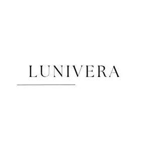

Trade Mark Journal No.2026/010 6 March 2026
UK00004344489 23 February 2026 (3,35)

- Class 3
- Cosmetics; non-medicated skin care preparations; beauty creams; facial creams; body creams; hand creams; eye creams; cosmetic lotions; cosmetic oils; essential oils; aromatic oils; perfumed oils; natural oils for cosmetic use; skin serums; facial serums; cosmetic masks; beauty masks; lip balms; lip glosses; nail care preparations; nail strengthening preparations; nail creams; nail oils; nail polish; nail conditioners; cuticle oils; cuticle creams; nail treatment preparations; non-medicated toiletry preparations; bath preparations; shower gels; soaps; liquid soaps; non-medicated soaps; natural soaps; perfumery; fragrances; perfumes; body sprays; deodorants for personal use; hair care preparations; shampoos; conditioners; hair oils; hair masks; non-medicated hair serums; cleansing preparations for personal use; facial cleansers; skin cleansers; Laundry preparations; laundry detergents; laundry washing preparations; laundry bleach; laundry additives; fabric softeners; fabric conditioners; washing powders; washing liquids; washing gels; washing tablets; washing capsules; stain removers; pre-wash treatments; soaking preparations for laundry; fabric whitening preparations; colour-safe laundry preparations; delicate wash preparations; wool wash preparations; silk wash preparations; eco-friendly laundry detergents; non-medicated laundry additives; rinsing agents for laundry; anti-static laundry preparations; preparations for removing odours from fabrics; preparations for brightening textiles; preparations for conditioning fabrics; cleaning preparations for household laundry use; washing preparations for clothing; detergents for use in washing machines; liquid detergents for clothes; natural laundry preparations; biodegradable laundry detergents; non-medicated fabric care preparations; textile cleaning preparations; laundry starch; laundry soaps; laundry liquids for hand washing; laundry preparations for use in cold water; laundry preparations for use in hot water; Cleaning preparations; household cleaning preparations; washing machine detergents; natural cleaning preparations; eco-friendly cleaning preparations; non-medicated household preparations for cleaning purposes; cosmetic preparations for aromatherapy; room fragrances; linen sprays; fabric refreshing sprays; ironing preparations; ironing starch; textile fragrancing preparations; laundry fragrance boosters; scented laundry preparations.
- Class 35
- Sales promotions at point of purchase or sale, for others.
Dariia Woodland